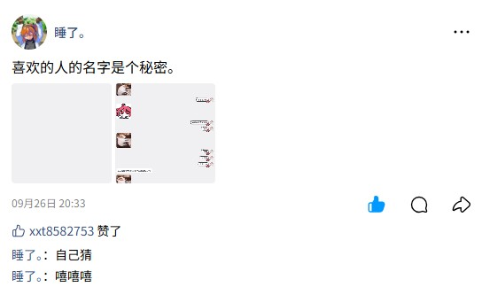
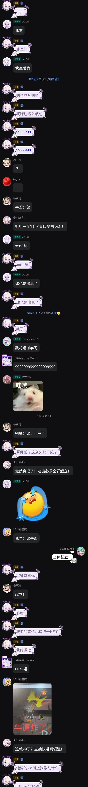

这篇文章我10/7的时候就想写了，但仅仅像往常一样新建了一个HTML，body标签都是空的就扔进git暂存区，然后再也不动它了。直到现在，我才终于拿起笔（其实是键盘）决定把这个故事从脑海里导出来。
为什么拖到现在，将近一个月？
也许你有这么一种感觉：有时心情不太好，写个日记，睡个觉，不愉快的经历就忘掉了。同理，我刚经历了一段非常愉快的时光，我担心写出来之后那种快感会随之消散，但事实证明，我的担心是多余的。
下面，正片开始
看到这个标题，你可能认为是什么奇奇怪怪的同人文，但我想先讲的是在学校里发生的一些事。
初见
今年6月左右，我们重新分了班，老师让大家上台自我介绍。其他同学的兴趣爱好都与我不符——要么是篮球足球，要么是明星艺人。眼看着上台的人已经到了第四大组，我想，也许我在新班级找不到同好了吧。
轮到我前面的一名女生了，她说，她喜欢看动漫，打音游。
我一下就来了兴趣：我草，居然有极其稀有的音游人！我没记住她的名字，只记住她的座位，想办法找个时间去跟她聊聊。
第二天，我经过她的桌子，发现她桌面上摆着一个teto的棉花娃娃，那事情就更有意思了，她居然听术力口！
我如同发现了宝藏，却碍于面子，迟迟不能跟她打招呼，只能偶尔看她几眼。她桌子上摆的谷子也越来越多，我开始后悔当初我自我介绍时，为什么不说自己喜欢打音游、听术，而是仅仅说自己喜欢编程，然后顺理成章的当上班上的电教委员，不然的话，我也不至于像现在一样这么尴尬——我一直认为自己是社恐。
后面，我终于找到机会询问她，这时，我才知道她的兴趣是真的与我高度重合——众所周知我是wmc，然后还打烤，当她告诉我她也玩舞萌和世界计划，我几乎高兴的要跳起来！
更令人吃惊的是，我们只是听别人做好的术力口，而她自己就是一名P主！她会自己编曲、填词、调教，以及自己绘制PV。这种典型的“一体机”让我心生仰慕——跟我这种对乐理一窍不通、只会在剪辑软件里拉几个关键帧的废物比起来，她简直就是神！
情窦初开
在这之后，我成了她的忠实粉丝，也和她有了更进一步的交流。现在，我可以解释标题了，虽然我最早看到她桌上放的teto，但根据我对她的了解，也许她更喜欢足立零一点？
而我，就是一名葱厨了，如果你下载过我的一些程序，就会发现要素叠满了，到处都是miku的气息，你可以先记住这些设定，后面要考。
今年7月份，别的学校都放暑假了，就我们株洲市南方中学还在违规补课，为了撒气，我把年级组组长的头P在一些术曲的PV上，作为班级壁纸，当然，才不是为了吸引她注意呢！
果不其然，她找我要原图，我心中暗喜，把图片发给她，几分钟后就收到了返图，这样，好感度不就刷起来了吗？
后来学校爆发了“南方7/14事件”（各位请自行谷歌吧，学校把这些消息都封锁了，国内的帖子都删了，因为事情确实闹大了网警都来了）那天下午，整栋楼的学生都跑出来，我也不例外，挤到年级组办公室门前看热闹，她不说话，紧随我其后，好奇地打量着我面前的人群——那是她第一次戳中我萌点。
7/15，学校迫于压力，给我们放假了，但如果你看了那篇文章就知道，我的电脑硬盘正好最近烧坏了！
那放假了，在家里玩不了电脑有什么意思啊？
“没事，我们出去打舞萌吧。”她向我提议。
我回家放了书包，便直奔机厅。
她登录上自己的账号，我彻底呆住了：别看她外表软萌可爱，实际上居然是个w2大佬！她的手法十分熟练，交错复杂的星星对她毫无难度，纵连双押更是不在话下，她头上的蓝色蝴蝶结随着节奏摆动，看上去漂亮极了。
可是在那天出勤之后，我就再也没给她发过消息了。
（废话，都放假了聊什么嘛）
稳稳地接住你
虽然那个暑假我过得很开心，但我相信她肯定遇到了很多不愉快的事情：她的QQ空间堆满了负能量的说说，而且几乎是日更。虽然她也会发点别的（比如出cos、新歌的工程文件之类）但每当看到那些悲观的文字，我的心也随之一沉。我很想说点什么，想安慰她，但我怀疑自己的S区有问题，平时在学校经常不说话，而在自己喜欢的人面前，我经常打完一整串文字，然后删掉。
我选择不发表任何评价，然后点个赞，证明我看过。我很担心她的精神状态，询问了曾经跟她关系好的人，但别人认为“已经习惯了”。
现在好歹是在家里，到时候开学了返校，坐牢的话心理压力我都不敢想多大，因此，我必须做点什么。
为她而建的repo
众所周知pjsk是个手机游戏，为什么不能把它移植到Windows，让大家能在班级希沃上用触摸屏玩呢？
也许你会惊叹：一个集剧情、抽卡、演出等多功能为一体，囊括unity、live2d、3D MV等技术的9GB庞然大物，怎么可能是一个学生能完成移植工作的？
那就是天时地利人和啦：
- 我根本就没有完成彻底移植，从9/6项目立项到现在，仅移植最基础的剧情、单人/多人演出功能，主要精力放在解包逆向和性能优化上。
- 此时正值LLM“百家争鸣”：无论是经济实惠的GLM 5.3 Flash、DeepSeek V4.1 Flash，还是主打聪明能干的GPT 5.6 Sol，都为我这个半吊子C++爱好者提供技术支持。
- REA（Reverse Engineer Anything）的爆火和游戏逆向的热潮为我的项目指明方向。
- 已经有人成功逆向日服pjsk（国服脱壳比较难）就是128字节异或的事，而且一些资源站竟直接提供解包好的assets！
- 有些pjsk狂热爱好者将个人网站css做成那个样子，这直接为我项目的UI组件提供设计令牌。
- 最重要的是，我有一个极为明确的用户群体，明确到我可以不添加任何遥测的情况下知道用户喜欢什么功能，遇到什么问题——在我push到公共仓库以前，我甚至知道有多少用户，精确到个位数！我有了用户，也就有了动力。
项目具体技术细节就不多赘述了。9月份，我的github热力图全绿，每天手量几何、对着一张张精灵图“屎里淘金”，直到对世界计划的每一处UI都了如指掌，为了她，我什么都做得出来。
几天之后，主程序最后一个花括号终于闭合。我在机房发布release，回到班级，把软件下载配置好。
我还记得她看到界面时那惊叹的神情，我的程序确实很粗糙，但她仍然愿意在下晚自习后，选择开一把自己最喜欢的《熱異常》我觉得我的努力，终于有了回报。
喜欢的人的名字是个秘密
我对她产生了空前的关注，也不停地跟我朋友分享“那个人”的事，那段时间我基本上见了人就说“她今天...”搞得我朋友都有点厌烦了。
有一次晚自习，我跟她（和她的朋友们）聊天，不知怎么，我们的话题就扯到情情爱爱上了。
我突然问道：“话说，你在学校有喜欢的男生吗？”
这个问题很唐突，也很冒犯。她并没有正面回答我，那我就默认为没有咯。
可是半个月后发生的事情，给我的刺激我此生难忘。
9/26晚上，她突然发了标题为“喜欢的人的名字是个秘密”的说说。

当时我都准备去睡觉了，看到这个标题瞬间来了精神，点开详情页。她描述喜欢的人“名字三个字、有的时候会戴眼镜、很帅、很萌、长得高”。
我的交感神经瞬间兴奋起来，心跳突然加速。事先说明一下，我觉得如果别人用“很帅”来形容我，真的有失偏颇，但其它特征与我完全符合！
万一呢？我决定赌一把。
我立即联系好朋友abcd，他发来一连串问号：“这是什么感觉，妈的”。他在屏幕对面，和我一样紧张。
我决定先冷静下来，仔细想想，等等，足立零好像也符合上述特征。
因此，目前有三种可能性：
- 她描述的是足立零，故意搞抽象的
- 她喜欢了别的男生，只是特征和我有些相符
- 她喜欢我（这是我在当时想都不敢想的）
时间不知不觉已经过了零点，abcd突然叫起来：
“你个傻逼，我都看到了，刷新一下你的QQ空间，你的观察十分敏锐！”
我刷新了一下QQ空间，什么都没发生，又将QQ完全退出，确保后台已经死干净，然后重新进入，依旧没有看到任何新动态。
abcd截了张图给我，她揭晓了答案——就是足立零！
我不愿再相信自己没刷新出来，这说明她绝对屏蔽我了！
坏菜了兄弟们，我先跳了。
我的心情沉入谷底，刚才的兴奋劲一扫而空。
“也许她在试探你。”abcd安慰道，我决定再次冷静。
“你先告诉我 你认为她是什么态度？”abcd又问。
- 发现我看了这个说说后发新说说澄清： 时间线对不上（说自己其实喜欢足立零的时候是晚上8点，而我在10点才打开QQ），且没必要屏蔽我。
- 故意逗我玩： 这是最乐观的想法，说明她知道会有人对号入座，还有戏。
- 我手机出问题了： 单纯是我没刷新出来。
此时的我已十分疲倦，一看我已经被这两条说说折腾到凌晨一点多了，25時，滚去睡觉。
虽然我不想吊大家胃口，但事实就是无事发生，大家就像忘了这件事一样。她和她的朋友在一起的时候，我还是经常跟在她后面跟个hentai一样，她却没有任何反感，那时的我还在天真地想，事情应该会往好的方向发展。
但我还是按捺不住好奇，迫切地想知道自己在她心目中究竟是怎么样，于是我派出subagent——yy，她同时跟我和那个人玩得好，yy给我传回的情报是“很牛逼的技术宅听deco”——这个信息并无太大含金量。
然而，事情的转机出现在国庆节，请看——
葱零往事
终于放国庆节假了！好想出去玩呀，不过没人陪我，我一般是不会出去的。
她似乎看穿我的心思，提出可以在10/6一起去咖啡厅坐坐，和其他班同学聊一下研究性学习的事情，顺便去打舞萌。
10/6那天，她所谓的“其他同学”没来，学校的研究性学习其实我也没啥心情搞，我们直接去打舞萌。
虽然也不是第一次单独跟她在一起，但我还是兴奋到了极点——她キラキラ，我ドキドキ，这tm究竟是什么感觉？
我们两个一同上机。我看似在漫不经心地选歌，实则在想如何让我的“阴谋”得逞：在舞萌圈子里，有一首歌具有极为特殊的含义，那就是40mP的《恋愛裁判》作为小情侣必开曲目，当有一男一女上去打这首一定会引来一堆wmc围观的。毫无疑问，我非常想开这首，但显然我也不敢：每次按到ら行，心里都一阵激动，但选到れ开头的歌，我便迅速滑动屏幕，生怕一松手就选到那首歌了。
这还不是最主要的，上午打完舞萌退勤后，她说，可以吃个饭再走——和喜欢的人吃饭，这也是我曾经做梦都不敢想的。
她问我想吃啥，本来和她在一起就紧张，这下我的选择困难症又是犯了。她便找了个拉面店，我们两人坐在一起。
点菜的时候，我故意点了一盘炸鸡。当炸鸡端上来时，她自言自语：“不知道为什么，看到炸鸡就想到足立零……”（注：足立零喜欢吃炸鸡）我便投喂了她一个，她吃东西的样子真是可爱极了。
饭后，按原计划来说是直接各自回家，但她提出去外面转一转，我想这是一个比较好的信号，并且我也终于有机会和她“光明正大”地一起走走。
我们的话题不知怎么转向嗑CP，不知怎么，我脑子一抽，来了一句：为什么不嗑葱零呢？
在外面逛街也是瞎逛，她提出请我去拼豆，我们便走进一家拼豆店。店员问她要什么图纸，她在平板上搜了一张足立零的图出来——我就知道！
“我知道你想拼什么。”她帮我搜了一张miku的图片，果然她懂我。
就这样，我戴上耳机，拿起镊子，和她按照图纸将豆子一个一个放在板子上。从下午两点到六点，天色越来越暗，人们一波又一波地离开，我也听完歌单里最后一首歌，但整张图还是缺了个大口子——看来，干这种活真的很需要耐心呢！
经过几个小时的努力，我们终于拼成了，下面来看真正的葱零合影：
激进的尝试
次日我们返校自习。中午，我像往常一样来到机房，跟abcd和kingstar聊那个人的事情——我发现除非面对面看着她，否则无法保持不想她。
聊着聊着，kingstar突然抢过我的键盘，点开QQ置顶，往输入框内敲下：
话说你有喜欢的男生吗？
我极力想夺回键盘，却拗不过他有力的手臂。我想绕开他，把显示器关掉，但他已经按下回车键了。
骗你的，其实我也想发（
但，我只敢发一下下。
然后，我错过撤回时间了！
没人知道那几天我过得多么忐忑不安，事实上，自从发了那条消息，回到教室我不敢直视她的脸。听课时，我如坐针毡，生怕她下课后让我出去单独聊聊。但她永远都是那么从容淡定，永远像什么都没看到。日子一天天过去，8号、9号……她一直没回复我的消息。这时我才意识到一个细节：学校说会查违禁品，所以她没带电话手表！因此她也无法接收我的消息。
也许你会觉得奇怪，为什么我这么怕她看到这条消息，如果她真的喜欢我那是最好，但如果她有喜欢的人，这样做就很冒犯。
而且，这条消息明眼人都看得出是约等于表白的前奏，我们从6月份相识到现在也没多久，若是贸然发这条消息，会不会让她认为我是头脑一热、比较激进的人呢？
无论如何，我现在暂时安全。那放假了她看到QQ该怎么办呢？
那几天晚上，我都梦见了她，场景也很随机：在校园内手拉手漫步、在教室里同桌学习、在机厅里一起打舞萌。而每当我梦醒，都会惊恐地想起：梦与现实是相反的！
10/10号，我们考完月考，老师突然在广播里宣布放假一天。
大家都为这个突如其来的假期欢呼雀跃，只有我在一旁无动于衷，脸上写满担忧——因为我知道，这件事终究是瞒不住了。
放学的路上有些堵车，回到家已经晚上6点了，曾经回家一玩就是一整天的手机，如今我碰都不想碰，但我知道，我终将要面对现实。
我鼓起勇气，不知多久才将手指放在传感器上解锁手机。点开QQ，却发现没有任何回复。
这难道不是我最想要的结果吗？
不！我认为情况可能更加糟糕：现在已经很晚了，她也应该早就到家了，但她不回复，究竟是没看到还是“已读不回”？如果是已读不回，那是：
- 早料到我会喜欢她，而她已有喜欢的人，不知道如何委婉地拒绝我？
- 她自己就不想谈恋爱，在思考如何回复我？
- 看出我这句话的画外之音，而她也希望和我在一起，激动之情盖过语言？
不知为何我总是把事情往最坏的情况想，但无论如何，担心都是没用的，我先等待她的回复。
然而，直到晚上七点，她都没有回复我任何消息，我实在是坐不住了，去nightcord（南方中学信息拓展社的一个内部群的别称）求助。
我让群友们帮我写一些道歉的文案，他们不知道为什么我只是发条消息就要道歉，因为我很担心就是这条消息冒犯了她，以至于她不理我。
然而无论是我自己几经修改的版本，还是群友帮我手写/生成的文案，我都感觉不是很满意：要么太刻意、太人机！要么就是显得过于OOC（我平时不应该说出这种话的）。最后，我综合多个版本，在快晚上10点的时候发过去了，真的是一句非常简单的话：
“这个问题是不是让你感觉不太好呀，我只是想问一下，没别的意思，对不起。。”
没错，“吟安一个字，捻断数茎须”，一句话折腾我这么久。
abcd说：“感觉发出去后朋友有点难当下去了。”那我有什么办法，
出乎我意料的是，她很快回了我消息：
“什么问题呀？我都没看到”
她一连问了5次，让我都不知道怎么回复，这究竟是怎么啦？
这时我才知道，她没开消息漫游，因此根本就不知道我问了这个问题！
那现在问题来了，我应该诚实的把这个问题再问一遍吗？
群友们都建议我随便再想一个问题搪塞过去，但我还是决定冒个险，我也想知道这个问题的答案。
我终于还是把这个问题说了出来，她的回复是这样的：
“有，咋啦？”
你可能会说，这不就是凉了吗？
但我看到这条消息，却释怀了，经历这么久的思想斗争，我真的很累了。
还没等我回复，她又问：
“你嘞？”
我说我有。
“是不是那个？”
“不是。”
“没事说，要不交换，你先说还是我先说？”
我实在是无法开口，不知酝酿了多久，我终于发过去：
“其实我喜欢你来着的”
“我也喜欢你。”
此刻，万物沉寂，只听到自己还未平息的呼吸声。
我的心跳不再那么迅速，却跳得更加沉重。
“我等这一天等了很久了”
我等这一天也等了很久了
nightcord里满屏的“我靠”“牛逼”，有位群友说：“我追的言情小说终于HE了”

念念不忘，必有回响。群里的军师们都要哭了。8班的电教委员立刻用word做了一个贺电的红头文件，但好像忘记用仿宋gb2312了。
你要问我那一刻是什么感觉？一件曾经想都不敢想的事情、却愿意为之付出100%努力的事情，在此刻，终于给我了答案。横跨几个月，我无数次想开这个口，又总觉得不合适，如今阴差阳错地成了，真是何等的幸运啊！我感觉自己终于在学校密不透风的围墙中活出头，她是多年来寒窗苦读的磨砺，送我最珍贵的礼物。
第二天我们回到学校，她给我了一份情书，那一天成绩刚出，我情绪有些低落，但她的话让我近乎哭出来——不是难过，而是感动，以及很多情绪交织起来，我不知道该如何用语言形容。
（以下为节选文段）这渐渐让我转移了注意力，也开始思考自己拥有什么，再渐渐想到去改变现状，至少每天是在一个有盼头的日子中醒来，不会太快乐，但不再是痛苦。 我终于决定，很长的相处里，发现你是一个虽然不善于表达，但非常用心， 特别有耐心，不是三心二意、三分钟热度的人，你也在这些日子里塑造了一个新的自己。于是终于正视内心，去承认你就是很好，我放心把自己交给你。 它渐渐内化成前进的动力，又开始让我开始从逃避转向坦然面对。 我想，至少我可以做点什么，哪怕只是想让自己变好一点点。虽然此刻的我仍是迷失的，但我不再是停滞不前的了。谢谢你让我有了直面问题的勇气。从今经后也许我还是会时而陷入痛苦中，但结果一定会再去面对。总会有哪怕很差劲的办法。
她能这么想，我真的很感激。直到现在我都会时不时把那封情书拿出来读一读，我决心我也要做得更好。
那几天，我都觉得自己在做梦一样。曾经我认为自己再怎么样都不会和“早恋”一词沾边，而我终于还是逾越了所谓的“底线”，追求到了我真正喜欢的人。
我也问过自己，是不是单纯跟她舞萌打多了，或者只是看她萌萌的就想来一场快餐式的恋爱，但事实告诉我，我就是在错误的时候遇上对的人，繁忙的学业生活压的人喘不过气，而她总能在我崩溃边缘拉我一把，我也在尽力帮助她。
说句实话，她是我所相处过所有人中最在意、最关心我的那个，当我感冒的时候，她摸摸我的头，叮嘱我注意保暖；当我遇到麻烦，她也发消息问我需不需要帮助；当我为考试焦虑时，她会跟我聊聊，然后和我一起复习；而当我处于情绪崩溃时，她抱着我，让我冷静下来。我很享受和她在一起的时光，每天下晚自习，我便牵着她又瘦又光滑的小手，顶着砰砰跳动的心脏，在月光下的操场散步。
我也和她在思想上进行较深的交流，聊了聊各自的理想和对未来的期待，这也让我意识到，她真的是值得交往一辈子的人。
学校查早恋很严，为了不被发现，我们经常在没人的角落聊一聊学习生活上的事。在她眼中（包括在我自己眼中）我是一个话非常少的人，因为我确实也不善于表达，并且也更喜欢听听她的想法，听听他软软的声音。有时我也会把她带到机房，我看着她用FL Studio编曲，她看着我跑最后一轮冒烟测试。
如今的我非常幸福，每天都很wonderhoi（出自凤笑梦的经典台词，指很令人兴奋，元气满满的事），因为我有爱的人，也有爱我的人。
如果你问我26年最喜欢的术力口是哪首，我会毫不犹豫地说DECO*27的《愛言葉V》——不是因为谈了恋爱才听，2月份deco刚出新专辑我就听了，单纯觉得好听，网易云音乐竟循环了三百多遍，如今再次点开这首已经熟悉到能默写歌词的情歌，肯定有些新的体会。
君が
何回だって想うから
何回だって歌うよ“39”
何回だって聴いてね 約束ね
きっと1からゴールへ その先だって
君がやめらんない 愛言葉は終わらせない
僕は
何回だって変わるけど
何回だって歌うよ“39”
何回だっておいでよ ここにいる
きっと1からゴールへ その先だって
君がやめらんない 愛言葉はいつまでも
ありがとう
感谢你，一位喜欢足立零的P主。
后记
这篇文章我还打算后续继续补充，目前只是骨架（谁家骨架七千多个字啊）
也许你还在好奇那个屏蔽事件到底是怎么个事，我跟她谈成后有一天问了她，她是这么说的：
想逗你玩儿…我告诉你吧，是足立零，但是一语双关。